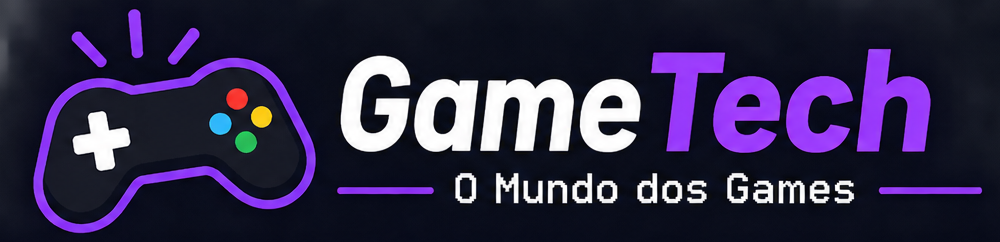

Jogos Independentes
Indie Games Studio

Conheça a atração
Os jogos independentes, também conhecidos como jogos indie, são desenvolvidos por pequenas equipes ou desenvolvedores individuais. Eles costumam apresentar ideias criativas, estilos artísticos diferentes e experiências originais.
O que você vai encontrar?
- Conhecimento sobre jogos indie;
- Exemplos de jogos independentes famosos;
- Diferentes estilos de arte e jogabilidade;
- Como pequenas equipes desenvolvem seus próprios games.
Responsável: Indie Games Studio
A Indie Games Studio é uma empresa fictícia que apresenta o universo dos jogos independentes e incentiva a criatividade no desenvolvimento de games.
Atração anterior Voltar ao início Próxima atração